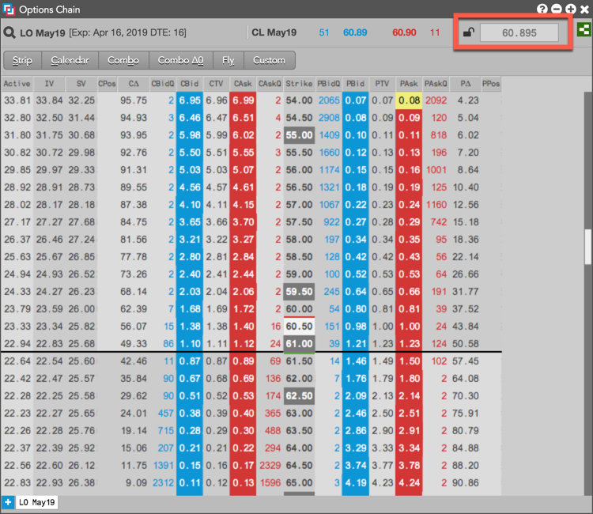
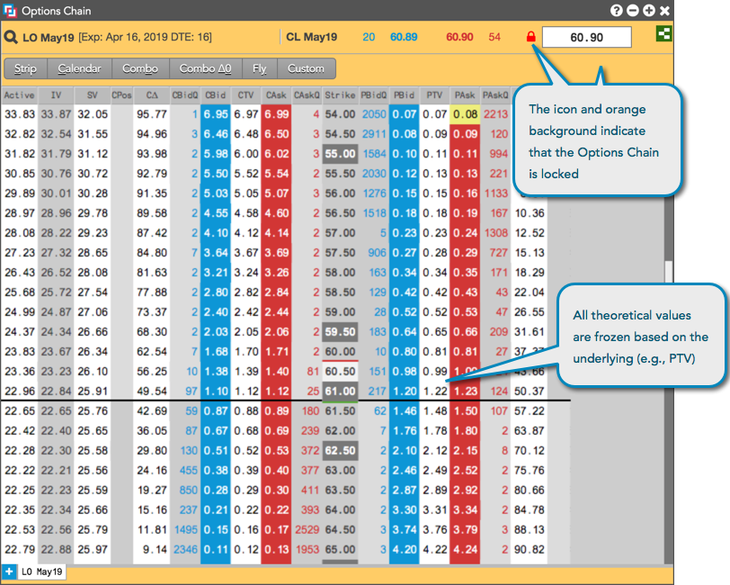
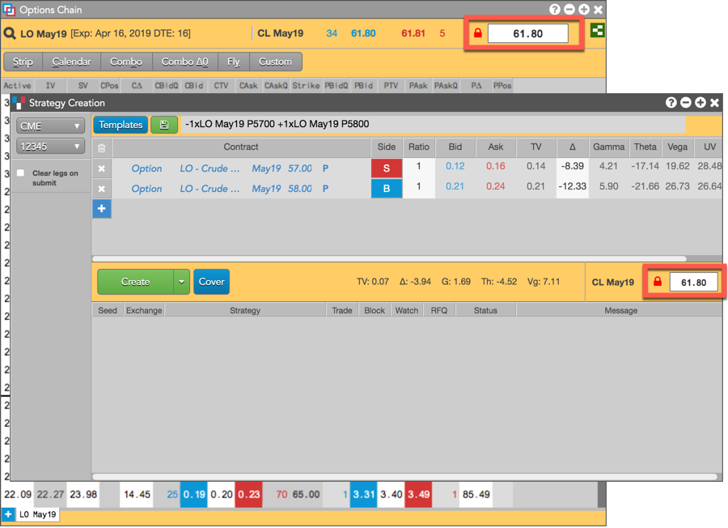

As an advanced options user, you can lock the options chain to view theoretical prices for a specific underlying futures price. You can also create a strategy from an Options Chain based on the locked underlying price.
Click the lock icon ( ) and enter an underlying price in the lock field to freeze the Options Chain for this price. By default, the price in the lock field is the midpoint of the bid and ask, which may be off-tick. You can freeze this price to view theoretical values, but the price will round to the nearest tickable price.
) and enter an underlying price in the lock field to freeze the Options Chain for this price. By default, the price in the lock field is the midpoint of the bid and ask, which may be off-tick. You can freeze this price to view theoretical values, but the price will round to the nearest tickable price.

After the Options Chain is locked, the theoretical values and Greeks are frozen based on the underlying price. The icon () and orange display of the widget indicate that the Options Chain is locked.
Note: Only the options analytics values are frozen. All market data is still live in the widget.

When the Options Chain is locked, you can create a strategy from the Options Chain based on the locked underlying price and options analytics values. The Strategy Creation widget that opens is also locked (orange background), but you can edit the price in the lock field to recalculate the theoretical values and Greeks based on the edited underlying price.

Strategy Creation remains locked until you click in the Strategy Creation widget. Unlocking the Options Chain does not unlock Strategy Creation.